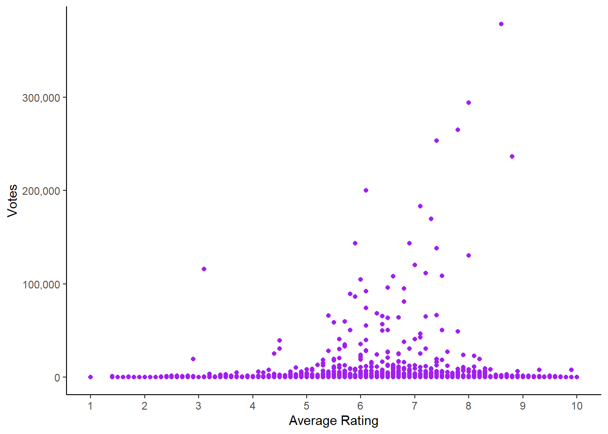

library(tidyverse)
load("data/movies_2023.rda")Q2
Exercise 2
The term “Barbenheimer” began on social media before the simultaneous theatrical release of two blockbuster films, Barbie and Oppenheimer, on July 21, 2023. This question asks you to explore data on movies released in 2023, not just these two. The data was compiled from https://datasets.imdbws.com and is available for you in the file “movies_2023.rda”. (For each of the plots in d, e, f mark where Barbie and Oppenheimer fall, just for fun, and extra discussion points.)
a. How many movies and variables are in the data?
glimpse(movies_2023)Rows: 3,687
Columns: 30
$ tconst <chr> "tt0109128", "tt0122511", "tt0354964", "tt0361130", "tt…
$ titleType <chr> "movie", "movie", "movie", "movie", "movie", "movie", "…
$ primaryTitle <chr> "Washed Ashore", "The Gnomes Great Adventure", "Railway…
$ originalTitle <chr> "Angeschwemmt", "The Gnomes Great Adventure", "Tie dao …
$ startYear <chr> "2023", "2023", "2023", "2023", "2023", "2023", "2023",…
$ runtimeMinutes <chr> "86", "74", "83", "67", "80", "144", "80", "82", "118",…
$ genres <chr> "Documentary", "Adventure,Animation,Comedy", "War", "Do…
$ averageRating <dbl> 7.2, 6.1, 6.2, 5.4, 2.9, 6.9, 3.9, 6.0, 6.4, 7.6, 4.9, …
$ numVotes <dbl> 29, 60, 103, 9, 224, 143261, 25, 7, 6269, 12, 224, 154,…
$ adventure <dbl> 0, 1, 0, 0, 0, 1, 0, 0, 0, 0, 0, 0, 0, 1, 0, 0, 0, 0, 0…
$ action <dbl> 0, 0, 0, 0, 0, 1, 0, 0, 0, 0, 0, 0, 0, 1, 0, 0, 0, 0, 0…
$ animation <dbl> 0, 1, 0, 0, 0, 0, 0, 0, 0, 0, 0, 0, 0, 0, 0, 0, 0, 0, 0…
$ biography <dbl> 0, 0, 0, 0, 0, 0, 0, 0, 0, 0, 0, 0, 0, 0, 0, 1, 0, 0, 0…
$ comedy <dbl> 0, 1, 0, 0, 0, 0, 1, 0, 0, 0, 0, 0, 0, 1, 1, 0, 1, 0, 0…
$ crime <dbl> 0, 0, 0, 0, 0, 0, 0, 0, 0, 0, 0, 0, 0, 0, 0, 0, 0, 0, 0…
$ documentary <dbl> 1, 0, 0, 1, 0, 0, 0, 0, 0, 0, 0, 0, 0, 0, 0, 0, 0, 0, 0…
$ drama <dbl> 0, 0, 0, 0, 0, 0, 1, 0, 0, 1, 1, 1, 1, 0, 0, 1, 0, 0, 1…
$ family <dbl> 0, 0, 0, 0, 0, 0, 0, 0, 0, 0, 1, 0, 0, 0, 0, 0, 0, 0, 0…
$ fantasy <dbl> 0, 0, 0, 0, 0, 1, 0, 0, 1, 0, 0, 0, 0, 0, 0, 0, 0, 0, 0…
$ history <dbl> 0, 0, 0, 0, 0, 0, 0, 0, 0, 0, 0, 0, 0, 0, 0, 0, 0, 0, 0…
$ horror <dbl> 0, 0, 0, 0, 1, 0, 0, 1, 1, 0, 0, 0, 0, 0, 0, 0, 0, 1, 0…
$ mystery <dbl> 0, 0, 0, 0, 1, 0, 0, 0, 0, 0, 0, 0, 0, 0, 0, 0, 0, 0, 0…
$ musical <dbl> 0, 0, 0, 0, 0, 0, 1, 0, 0, 0, 0, 0, 0, 0, 0, 0, 0, 0, 0…
$ reality <dbl> 0, 0, 0, 0, 0, 0, 0, 0, 0, 0, 0, 0, 0, 0, 0, 0, 0, 0, 0…
$ romance <dbl> 0, 0, 0, 0, 0, 0, 0, 0, 0, 0, 1, 0, 0, 0, 0, 0, 1, 0, 1…
$ scifi <dbl> 0, 0, 0, 0, 0, 0, 0, 0, 0, 0, 0, 0, 0, 0, 0, 0, 0, 0, 0…
$ sport <dbl> 0, 0, 0, 0, 0, 0, 0, 0, 0, 0, 0, 0, 0, 0, 0, 0, 0, 0, 0…
$ thriller <dbl> 0, 0, 0, 0, 0, 0, 0, 0, 0, 0, 0, 0, 0, 0, 0, 0, 0, 0, 0…
$ war <dbl> 0, 0, 1, 0, 0, 0, 0, 0, 0, 0, 0, 0, 0, 0, 0, 0, 0, 0, 0…
$ western <dbl> 0, 0, 0, 0, 0, 0, 0, 0, 0, 0, 0, 0, 0, 0, 0, 0, 0, 0, 0…There are 3687 movies and 30 variables in the data.
b. Think about your expectations. Write these down before you make any computations or plots of the data.
- What genre keywords would you expect to be the most common?
I would expect Adventure and/or Drama to be the most common as movies of these categories are thought to be filmed abundantly especially at an independent level.
- What would you expect the relationship between number of votes and ratings to be?
I expect a positive relationship between the number of votes and ratings since higher rated movies are considered as good movies. Logically, they should have more votes.
- What do you think the relationship between genre keyword and ratings might be? (What genre would have the top rating and which would have the lowest?)
I do not expect any strong relationship, or any relationship at all, between genre keyword and ratings since movies in any genres can be good. Moreover, since a movie may belong to many genres, it can be difficult to deduce a relationship as it may perhaps spoil the analysis.
- Would you expect a relationship between run time and rating to be?
I expect no strong relationship between run time and rating.
c. Make a bar chart of the genre key words (adventure to western), and summarise the distribution.
genres_pivot <- movies_2023 |>
pivot_longer(cols = adventure:western, names_to = "genres_long", values_to = "count") |>
group_by(genres_long) |>
summarise(count = sum(count))
ggplot(genres_pivot, aes(
x = genres_long,
y = count
)) +
geom_bar(stat = "identity", fill = "steelblue") +
labs(
title = "Genre Distribution of 2023 Movies",
x = "Genre",
y = "Count"
) +
theme_classic() +
theme(axis.text.x = element_text(angle = 45, hjust = 1))We observe a good amount of variability from the barplot where a bit of positive skewness may be observed, but this may just be because of the order we have placed the genres in (alphabetically). The selection of the order also contributes to the multimodality of the data where we see peaks in the following genres and no clear symmetry:
- Action
- Comedy
- Drama
- Thriller
Among all the genres, the most movies released in 2023 belonged to the genre of drama.
d. Plot the average rating by genre, in the best way that you can. Describe the distribution, and what you learn about ratings and genre.
genre_avratings <- movies_2023 |>
select(genres, averageRating) |>
separate_rows(genres, sep = ',') |>
group_by(genres) |>
summarise(avg_rating = round(mean(averageRating), 2))
ggplot(genre_avratings, aes(
x = genres,
y = avg_rating
)) +
geom_col(fill = "steelblue") +
labs(
title = "Genre Ratings of 2023 Movies",
x = "Genre",
y = "Average Rating"
) +
theme_classic() +
theme(axis.text.x = element_text(angle = 45, hjust = 1))The plot for Genres and Average Ratings exhibits uniformity in its distribution and thus, symmetry. There does not seem to be any dominant genre when it comes to average ratings. Hence, we can argue that there is no genre in particular that is dominantly better than the others or inferior than the others. Every genre may have had numerous similar rated movies resulting in no relationship between the variables.
e. Plot ratings and number of votes, being careful as to which axis each should be plotted on. Summarise the distribution and what you learn.
library(scales)
ggplot(movies_2023, aes(
x = averageRating,
y = numVotes
)) +
geom_point(color = "purple") +
labs(x = "Average Rating",
y = "Votes") +
scale_x_continuous(breaks = c(0, 1, 2, 3, 4, 5, 6, 7, 8, 9, 10)) +
scale_y_continuous(labels = comma, breaks = scales::pretty_breaks()) +
theme_classic()
There does not seem to be any immediate relationship between the average ratings of the movies with their number of votes. However, it may be argued that for the movies rated between 4 and 8, there might be a weak positive linear relationship. That said, we cannot conclude that there is an overall relationship between the average rating and votes of a movie. The data points that depict many votes between the average ratings of 4 to 8, they should be considered as outliers. The reason for such outliers could be due to the large interest for the particular movies.
f. Make appropriate plots to explore the relationship of run time against ratings.
library(gridExtra)
f_scatter <- ggplot(movies_2023, aes(
x = averageRating,
y = as.numeric(runtimeMinutes)
)) +
geom_point(color = "purple") +
geom_smooth(method = "lm") +
labs(x = "Average Rating",
y = "Runtime (minutes)") +
ggtitle("Scatter: Movie Runtime vs Movie Ratings") +
scale_x_continuous(breaks = c(0, 1, 2, 3, 4, 5, 6, 7, 8, 9, 10)) +
theme_classic()
ratings_bin <- c(0, 2, 4, 6, 8, 10)
f_boxplot <- ggplot(movies_2023, aes(
x = cut(averageRating, breaks = ratings_bin),
y = as.numeric(runtimeMinutes)
)) +
geom_boxplot(fill = "steelblue") +
labs(x = "Average Ratings",
y = "Runtime (minutes)") +
ggtitle("Boxplot: Movie Runtime vs Movie Ratings") +
theme_classic()
f_violin <- ggplot(movies_2023, aes(
x = cut(averageRating, breaks = ratings_bin),
y = as.numeric(runtimeMinutes)
)) +
geom_violin(fill = "darkgreen") +
labs(x = "Average Ratings",
y = "Runtime (minutes)") +
ggtitle("Violin: Movie Runtime vs Movie Ratings") +
theme_classic()
grid.arrange(f_scatter, f_boxplot, f_violin, ncol = 2)Reference List
Wickham H, Averick M, Bryan J, Chang W, McGowan LD, François R, Grolemund G, Hayes A, Henry L, Hester J, Kuhn M, Pedersen TL, Miller E, Bache SM, Müller K, Ooms J, Robinson D, Seidel DP, Spinu V, Takahashi K, Vaughan D, Wilke C, Woo K, Yutani H (2019). “Welcome to the tidyverse.” Journal of Open Source Software, 4(43),
- doi:10.21105/joss.01686 https://doi.org/10.21105/joss.01686.
Wickham H, Seidel D (2022). scales: Scale Functions for Visualization. R package version 1.2.1, https://CRAN.R-project.org/package=scales.
Auguie B (2017). gridExtra: Miscellaneous Functions for “Grid” Graphics. R package version 2.3, https://CRAN.R-project.org/package=gridExtra.
Kuhn, M., & Johnson, K. (2019, June 26). 4.2 visualizations for Numeric Data: Exploring train ridership data … Feature Engineering and Selection: A Practical Approach for Predictive Models. https://bookdown.org/max/FES/visualizations-for-numeric-data-exploring-train-ridership-data.html